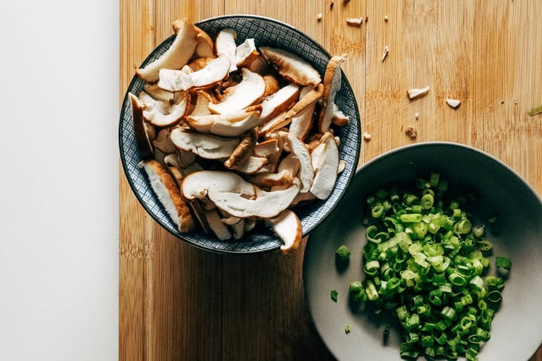

Chicken Wontons with Spicy Sauce
Description
This is my new chicken wonton method – steaming them up with with a spicy
sauce that is somewhere between dipping sauce and soup broth. It’s meant
to be eaten in a bowl, like a soup – kinda, but it’s so much more than
just broth with wontons. It’s luscious, dippable, scoopable, slurpable,
and full of umami from the shiitake mushrooms and greens (like spinach or
bok choy), if you choose to add some. The sesame oil gives even more
depth, and the chili oil gives a bit of heat and a pop of color.

Ingredients
- 3 tablespoons sesame oil, divided
- 14 ounces shiitake mushrooms, sliced
- 1 clove garlic, grated
- one 12-ounce bag frozen wontons (I like the mini chicken
- cilantro ones from Trader Joe’s or Costco)
- 1–2 cups chicken broth (depending on how soupy you like it)
- 1/2 cup teriyaki sauce
- 1–2 tablespoons chili crisp
- green onions, sliced
- sesame seeds
Method
-
Heat 1 tablespoon sesame oil in a large nonstick skillet over medium
heat.
- Add mushrooms; sauté until softened and yummy.
- Add garlic for the last minute or two of sautéing.
- Add the frozen wontons, chicken broth, and teriyaki sauce.
-
Simmer for 5 minutes, with a lid on, until the wontons are heated
through.
-
Finish with remaining 2 tablespoons sesame oil, chili crisp, and top
with sesame seeds and scallions.